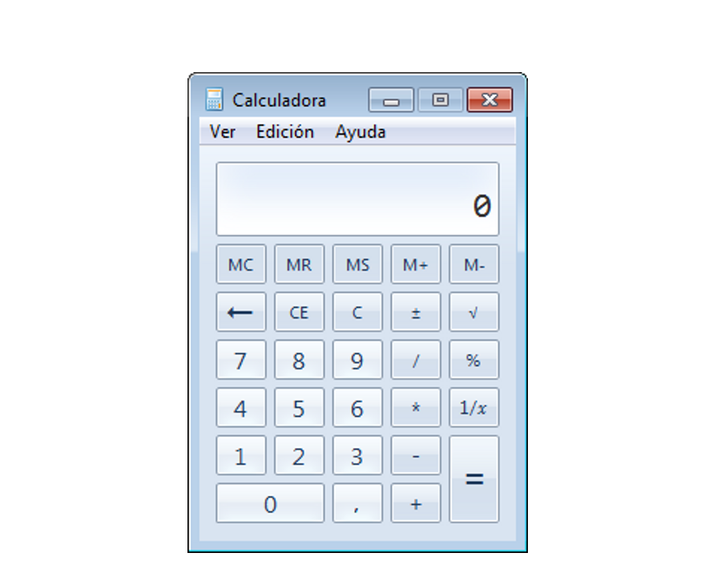
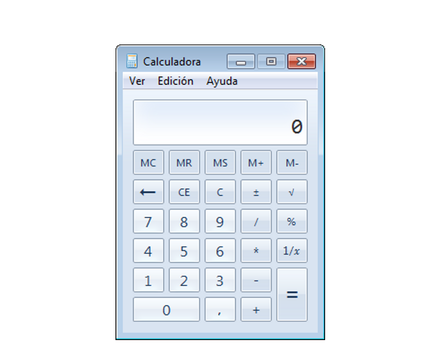

Iniciación a la informática e Internet
Aplicaciones
Apreta la tecla → para avanzar.


En informática, una aplicación es un tipo de programa informático diseñado como herramienta para permitir a un usuario realizar uno o diversos tipos de trabajos.
Ejemplos de aplicaciones:

Hay algunas aplicaciones que ya vienen pre-instaladas en Windows 7, y que podemos utilizar directamente.
Algunas de las aplicaciones preinstaladas en Windows 7:

 



Cambia de foto con las teclas: ↑ y ↓

Hay muchas otras aplicaciones que no vienen pre-instaladas en Windows 7, y que deberemos instalar para poder utilizarlas. El método más común de acceder a estas aplicaciones es descargarlas a través de Internet. Algunas de las aplicaciones más famosas:


Cambia de foto con las teclas: ↑ y ↓
El mundo del software rige su economía siguiendo un sistema de licencias con dos vertientes muy diferenciadas:

Se llama piratería al hecho de instalar una aplicación sin haber cumplido los términos estipulados en su correspondiente licencia.
Si el software que nos acostumbramos a utilizar es software con licencias abiertas, NUNCA incurriremos en un delito de piratería.

El proceso de instalación de software es un proceso delicado que requiere tener los permisos adecuados para modificar el ordenador (permisos de administrador).
En los ordenadores de la UJI no disponemos de esos permisos, por lo que no podemos realizar instalación de software, pero no os preocupéis porque con el software que tenemos instalado de serie podemos funcionar perfectamente para este curso de nivel básico.